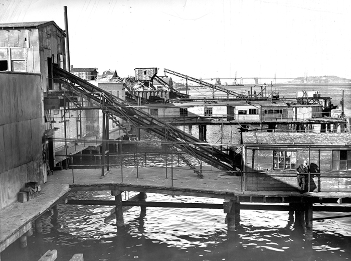
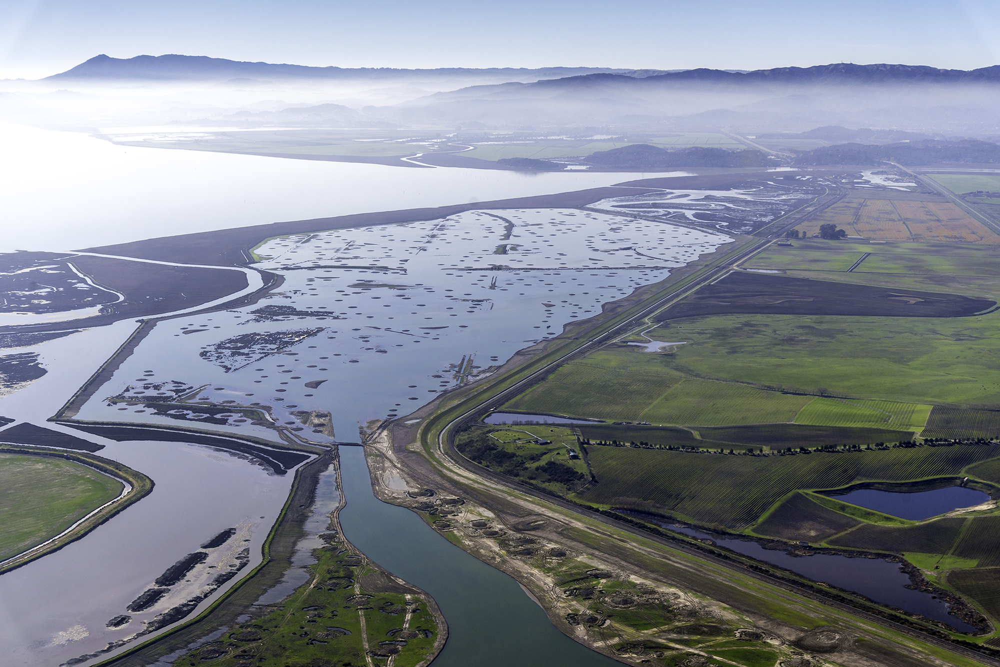
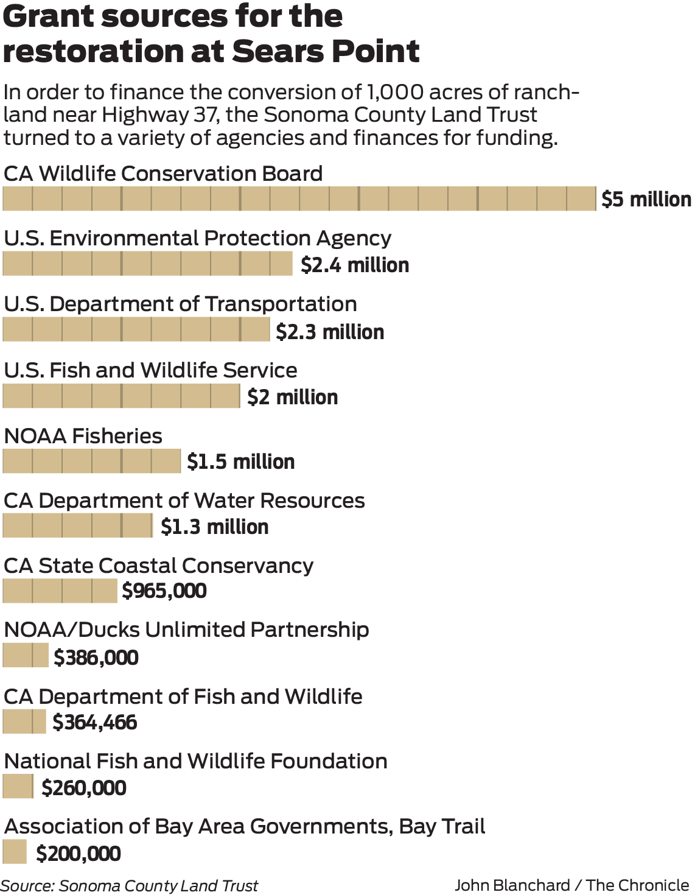

Now the challenge is more profound: to accommodate the bay’s impending expansion as it rises because of our warming planet. And to accomplish that in a way that won’t put our human and environmental resources at risk.
An abundance of scientific studies says the bay’s average tide could climb several feet or more by 2100, with most change coming in the decades after 2050. It’s an inexorable shift that threatens low-lying neighborhoods as well as the fish, birds and wildlife that need tidal flats to survive.
If sea levels were to rise 36 inches, the midrange increase through 2100 projected in the most recent study by the National Research Council, water would wash into San Francisco’s Ferry Building twice daily at high tide.
With just 16 inches of sea-level rise, the tollbooths of the Bay Bridge could be flooded during storms.
$35 billion worth of public property in San Francisco is at risk if sea-level rise by 2100 reaches 66 inches, the upper level forecast by the National Research Council.
Already, lanes on the ramps connecting Highway 101 to the Shoreline Highway near Mill Valley are closed regularly — 30 times in 2015 — because of high tides, a small but vivid hint of how profoundly our region will be altered in coming decades unless the Bay Area starts making plans now.
Annie Kohut Frankel of the California Coastal Commission educates the public at Pier 14 during a king tide in November 2015.
Photo: Paul Chinn, The Chronicle
The good news is, we have a narrow but real window of time to prepare for whatever lies ahead. But the most effective and imaginative initiatives will require all of us to change how we think about the bay and its shoreline. We must find the political will to take the types of long-term steps that have been resisted for the past half century.
“Our planning for adaptation hasn’t caught up to the urgency of the challenge we face,” said Jared Blumenfeld, who stepped down this month from his post as regional administrator for the federal Environmental Protection Agency. “The power of the ocean is unfathomable. The question is, how quickly do we recognize this, and how do we respond?”
The National Research Council says the bay's sea level is likely to rise 36 inches by 2100...
The upper range scenario is 66 inches, nearly twice the amount.
In either case, it won't stop then.
In some areas, the solution will involve marshes that double as environmentally friendly buffer zones. In others, where people already live and work close to the shore, smart bayfront development can help protect the built environment behind it while also addressing such concerns as our region’s need for housing.
Fortunately, we aren’t starting from scratch. The quest to protect and replenish the bay already has produced success stories both large and small: from the rebirth of diked farmland as scenic wetlands in the North Bay to San Francisco’s waterfront, where the revival of the Ferry Building and the transformation of decrepit Pier 15 into the Exploratorium science museum has made the Embarcadero one of the city’s most popular destinations — and one that will require careful protection in the coming years.
Those triumphs demonstrate both the potential that exists and the time and expense that make such turnarounds too few and far between. San Francisco and the region need to get serious about the slow-moving threat coming our way. Otherwise, the larger forces of nature might swamp our best intentions once and for all.
An aerial view of the Port of San Francisco, estimated to be from the mid-1920s. The Ferry Building is adjacent to the wide, indented section of the waterfront, with Telegraph Hill and Alcatraz Island in the background.
Photo: San Francisco Port Authority handout, circa 1920s
Two ships are docked for Matson Lines at Pier 35 of the Port of San Francisco in 1967.
Photo: San Francisco Port Authority handout, 1967
San Francisco tidelands and Pier 72 as seen in 1955, during a time of heavy development.
Bill Young, The Chronicle 1955
A view from Telegraph Hill shows the relatively undeveloped northern waterfront and Angel Island in the background. Today’s Fisherman’s Wharf was built on bay fill land created from the rubble of buildings destroyed in the city’s 1906 earthquake and fire.
Photo: Popperfoto/Getty Images, circa 1880s

The Northern Packing Corp. operated at Pier 92 near the Islais Creek Channel.
Photo: Bob Campbell, The Chronicle 1956
A ferry prepares to dock at the San Francisco terminal in 1938 with the Bay Bridge, constructed in 1933, at left.
Photo: Photographer unknown 1938
A ship named the Frances Salman is unloaded at the San Francisco waterfront in 1950. Coit Tower can be seen in the background.
Photo: Chronicle file 1950
When community dignitaries and government officials gathered in October to watch an excavator claw a break in a levee along San Pablo Bay, the mood was exultant.
Those on hand cheered as water gushed through the opening, an orchestrated flood that with time should turn 1,000 acres of ranch land near Highway 37 back into a tidal marsh rustling with cord grass and providing habitat for such endangered species as the salt marsh harvest mouse and the Ridgway’s rail, a hen-size shorebird.
Along with celebration came relief, and no wonder: Ten years had passed between conservationists’ purchase of the former hay ranch and the breach of the levee. The $16.6 million to pay for the restoration included grants from 14 sources. The two years of work to ready the site came only after seven years of environmental studies.
Work crews breach a levee along San Pablo Bay to begin the process of turning 1,000 acres of ranchland near Sears Point Ranch along Highway 37 back into a tidal marsh.
Photo: Connor Radnovich, The Chronicle
A long line of spectators walk to the site of the levee breach near Sonoma on an October Sunday last year.
Photo: Connor Radnovich, The Chronicle
People watching the levee breach at Sears Point Ranch near Sonoma hold seed balls that they will throw to help replant the newly created marsh.
Photo: Connor Radnovich, The Chronicle
This small episode at Sears Point Ranch hints at the enormity of what lies ahead if we’re to create, or re-create, additional wetlands that scientists say would help us absorb the worst impacts of sea-level rise later this century. But for this to happen, the Bay Area must overcome a protective mind-set that values time-consuming review processes above all else.
That culture was born of necessity in the 1960s, when ordinary citizens took action to protect regional treasures. One of the first major victories came in 1965, when the Bay Conservation and Development Commission was created in response to a crusade launched by residents alarmed by the cavalier way that Bay Area cities and counties treated shallow waters as building sites or convenient spots for garbage dumps.
Sea level rise around the bay
Current scientific projections call for average high tides within San Francisco Bay to rise by as much as 66 inches between now and 2100. Whatever the exact level, the combination of rising seas and more extreme weather will pose threats around our shores in a variety of ways. Here are six – and the list doesn’t include such obvious targets as San Francisco and Oakland airports, both of which are built partly on landfill, and the low spots where bridges touch ground.
Sea level rise around the bay
Current scientific projections call for average high tides within San Francisco Bay to rise by as much as 66 inches between now and 2100. Whatever the exact level, the combination of rising seas and more extreme weather will pose threats around our shores in a variety of ways. Here are six – and the list doesn’t include such obvious targets as San Francisco and Oakland airports, both of which are built partly on landfill, and the low spots where bridges touch ground.
Select different map locations to see how sea level rise will impact different areas around the bay.
Click on any icon to begin.
The legislative mandate to the new commission was straightforward: “Protection of the bay as a great natural resource ... with a minimum of bay filling.” The autonomous agency was given jurisdiction over not only the bay, but the 100-foot-deep band of shoreline along its edge. And by any measure, the agency has been successful: The bay is nearly 19,000 acres larger than it was a half century ago.
Now, though, there’s a different task at hand.
“The challenge ahead is to protect the Bay Area from the bay, not the other way around,” said Will Travis, the commission’s executive director from 1995 to 2012.
As far back as 2007, the agency turned heads with maps showing how our shorelines would be altered by a 55-inch rise in sea levels. Two years later, it held a design competition to solicit conceptual responses to those long-range projections.
But when the Bay Conservation and Development Commission sought to amend its guiding document, the Bay Plan, to take climate change into account, the update approved in 2011 was modest. There was no follow-up on the most important element, a call for “a regional sea-level rise adaptation strategy.” Travis retired a year later.
A decaying seawall with exposed rebar along the Embarcadero between Mission and Howard streets in San Francisco.
Photo: Michael Macor, The Chronicle
Passengers disembark behind the Ferry Building along the Embarcadero.
Photo: Michael Macor, The Chronicle
Pier 7, dedicated in 1990, is an early example of efforts to improve public access along San Francisco’s Embarcadero.
Photo: Michael Macor, The Chronicle
“The problem is, we have an entire regulatory system crafted around the idea that the shoreline is permanent,” Travis said this spring. “The laws being administered were enacted in a different age, to deal with different problems.”
Today’s leaders are trying again.
On May 19, the commission voted unanimously to pursue a set of initiatives that, theoretically, will strengthen the Bay Area’s response to sea-level rise. Among them are a nine-county assessment of where and how we are vulnerable and a renewed call for a regional adaptation plan. Still, many commissioners were skittish about statements such as the possible need to “change existing regulations” to figure the potential impact of climate change into the review process from the start.

The Sears Point Restoration Project on San Pablo Bay in Sonoma County aims to restore 1,000 acres of ranchland near Highway 37 back into a tidal marsh. Man-made marsh mounds can be seen peeking through the surface to enable vegetation to take hold.
Photo: Stephen Joseph, Sonoma Land Trust
For the Bay Conservation and Development Commission, the balancing act is to take proactive steps but not go so fast that local governments push back at what they see as a threat from above. That dilemma played out in the comments from commission Chairman Zack Wasserman, a land-use attorney appointed by Gov. Jerry Brown in 2012.
As a region, Wasserman said, “We need to speed up our response to climate change now.” But as the new recommendations were being discussed, he stressed: “We want to avoid anything that looks like it might be a back door toward additional regulation.”
Video: Erin Brethauer, The Chronicle
Austin Payne, a regional engineer with Ducks Unlimited, explains the history and goals of the Sears Point Restoration Project in turning 1,000 acres of ranch land back into marsh near Sonoma.
At some point soon, though, that tension must be faced.
The Bay Area needs to embrace a regional plan that not only spells out the long-term dangers of bay rise, but also ensures that shoreline projects aren’t ignoring the future, or protecting themselves in a way that might intensify problems elsewhere around the bay.
We also need regulatory initiatives that consolidate the approvals process. The reclamation of Sears Point Ranch shows this well. There was no real opposition to it, yet it required permits from seven county, state and federal agencies. The effort paid off because the Sonoma Land Trust, a nonprofit founded in 1976, had the persistence to make it happen.
The three co-founders of Save the Bay, Esther Gulick (left), Sylvia McLaughlin and Kay Kerr, confer during a state Senate hearing on the Bay Conservation and Development Commission in 1969.
Photo: Sylvia McLaughlin 1969
Already, some local models show how such a system might work.
For instance, any application to dredge and dispose of bay sediment is handled by a single hearing of an interagency group that includes eight government organizations. The focus is narrow — muck cleared from navigation channels — but the players range from the Bay Conservation and Development Commission to the U.S. Army Corps of Engineers.
Another reason to find ways to speed things up is that the region might be ready to invest tax dollars in large-scale ecological restoration efforts around the bay.
That’s the aim of Measure AA on the June 7 ballot. The 20-year parcel tax, which requires a two-thirds majority to pass, would raise an estimated $500 million over 20 years for marsh and habitat restoration as well as increased public access. The money would be distributed by the San Francisco Bay Restoration Authority, an appointed body of local officials.
The measure has strong support from business groups as well as environmental organizations and politicians from Sen. Dianne Feinstein, D-Calif., on down. Advocates say funds could help restore at least 30,000 acres of marshes, not only creating ecological benefits but providing a buffer against the extremes of sea-level rise in the north and south bays.
If Measure AA becomes law, the $25 million annual revenue stream will make it easier to cobble together funding. But the legal thicket — the overlap of regulators that pass judgment based on tightly defined individual priorities — will remain.
“A big challenge is the regulatory atmosphere,” said San Mateo County Supervisor Dave Pine, who chairs the restoration authority. “Every agency’s role is valuable, but the time and money add up. One would hope there could be a more streamlined and coordinated process.”
For observers like Blumenfeld, the former EPA official, the next few years are crucial.
“I wish the answer was that we we have the forethought and discipline to deal with this before there’s a crisis,” Blumenfeld said. “But I think in all reality, there could be the need for something to happen” before action is taken.
How many permit agencies does it take to sign off on a marsh?
Before any changes occur along San Francisco Bay, an array of agencies must give their approval. Click on the figures to see who might be involved – and why.
In San Francisco, where the waterfront has been a political battleground for decades, sea-level rise is too easy to ignore.
The city’s waterfront is vulnerable, no question: Combine a heavy storm with modest sea-level rise projections, and bay waters could pour across the Embarcadero into the Market Street subway for Muni and BART. As for the century-old seawall that protects South Beach and the Financial District, its decrepit condition is as obvious as the eroded piers beneath the Embarcadero near AT&T Park.

But such concerns are distant “what ifs” in a city where issues like homeless camps and police shootings dominate the political debate. Many activists treat the bay shoreline as a nostalgic slice of a timeless city, even though the bay’s edge has been reinvented on a regular basis since gold was discovered in 1848.
Preparing for sea-level rise should be at the center of planning efforts for the Port of San Francisco, which controls 7.5 miles of bay shoreline. The port’s efforts also should be integrated with those of other city agencies whose resources are imperiled by a volatile environmental future. But this is easier said than done, as City Hall veterans know.
“There’s a general belief that sea-level rise needs to be dealt with — by someone, somehow,” said Rudy Nothenberg, the former city administrator and now a co-chair of a group that will advise the port on an update of its current land-use plan, which dates to 1997. “But first, everyone wants to hold on to whatever their priority happens to be.”
The update, like the original plan, was sparked by a voter initiative blocking efforts by the port to redevelop waterfront sites that no longer play a maritime role. Such projects would bring extra revenue to an autonomous city agency that was created by the state in 1968.
Sea-level rise wasn’t an issue then. Nor was it a priority when the port’s current land-use plan was approved after years of debate, meetings and negotiations over such issues as public access.
Now, even the most conservative projections suggest that buildings on several piers along the Embarcadero could endure flooding on a regular basis by 2050. The seawall that runs from Fisherman’s Wharf to Mission Creek is estimated to need at least $2 billion in repairs to fortify it against a major earthquake. That price tag is likely to double if preparations for sea-level rise are added.
Harry McNulty, holding a mugwort plant, was among third-graders from San Francisco Day School who helped plant native shrubs along the San Pablo Bay Wildlife Refuge, on the edge of San Pablo Bay, in Novato in April.
Photo: Michael Macor, The Chronicle
“The issue, a big one I think, is that we’ve had a stable waterfront for so long,” said Elaine Forbes, the port’s interim director. “That is changing. We’ll need to figure out how to govern ourselves in a way that allows for perennial adaptation.”
That’s also the theme of the San Francisco Sea Level Rise Action Plan. Released in March with an introductory letter from Mayor Ed Lee, it states: “Sea level rise may be a slow moving threat to our city but it demands our action now.” Yet, the plan’s main action is to get the ball rolling, so 12 city departments can coordinate their response strategies. The target to produce a detailed citywide response strategy? 2018.
More good but slow-moving intentions: The City Planning Department is taking the lead on Bay Area Resilient by Design, envisioned as a competition where teams of architects and engineers collaborate on how the region can prepare for the future in imaginative, scientifically credible ways. The original goal was to kick off in October 2015. Now the target launch is this fall, assuming donors are found to provide the $6 million needed to run the competition.
In other words, there’s a clear desire to get beyond bureaucratic business as usual but no clear path to follow that will make this happen.
“We have to develop the vision of what we want, the endgame, and then figure out how to get there,” said Gil Kelley, the Planning Department’s director of citywide planning. “I can imagine how scientists feel about the permit process and the politics. It must be maddening to them. It’s maddening to us.”
King tides send bay water crashing onto the sidewalk at Pier 14 along the Embarcadero in November 2015.
Photo: Paul Chinn, The Chronicle
At its most basic level, here’s the dilemma facing our region: Things today aren’t as simple as when local activists pressured their leaders to close shoreline garbage dumps. Or when San Franciscans were faced with development schemes that included, believe it or not, a 1969 proposal for a car dealership on piers along the Embarcadero.
There’s complexity in the environmental pressures facing the bay. Complexity also in the range of responses that will be required — some areas will need marshes, others might need walls — and in the bureaucratic maze facing even a project with widespread support.
Today’s Bay Area doesn’t handle such complexity well. And that needs to change.
Within the city, planning for the port’s future and the larger infrastructure must have the reality of sea-level rise at its core. This means getting beyond the hard-line positions that have framed past waterfront debates and taking advantage of the opportunities to create new bay-side realms that we’ll be proud to hand off to our children.
As for the region, it’s time to reshape how regulatory decisions regarding the shoreline are made. Maybe there shouldn’t be a single agency telling other governments what to do. But the approval processes can be consolidated to deal with issues related to sea-level rise, so that things can move forward in predictable and orderly ways.
San Francisco Bay is the body of water that defines who we are more than any other natural feature. It survives as a compelling and ecologically rich treasure because Bay Area residents took action in the 1960s. If we’re going to protect that legacy, we need to take far-reaching action again now.